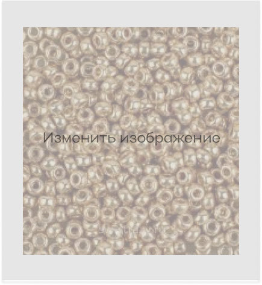

Seedbead Miyuki 11/0 4204 Duracoat Galvanized Champagne

Цвет: Duracoat Galvanized Champagne
в наличие
Размер
8/0
Cтрана: Япония
Самым распространенным является круглый бисер
(англ. ROUND SEED BEADS)
имеющий форму бублика.
Цена за упаковку: 4 280 ₽